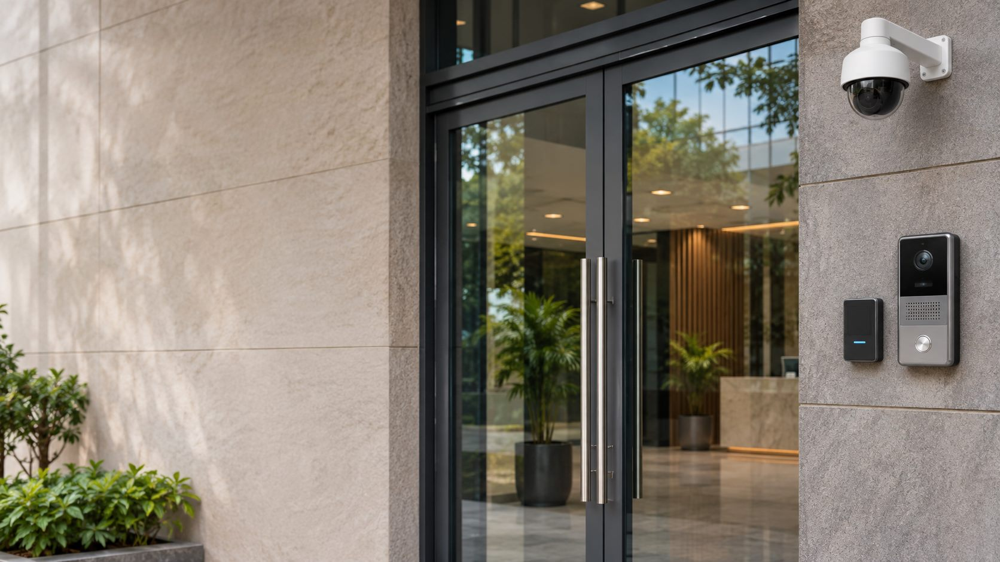

About Neo Systems
Security systems shaped around the work they need to support.
Neo Systems is focused on professional CCTV and surveillance services, alongside the NeoTimex mobile time-attendance product direction.

Our focus
Practical systems, clearer conversations.
We help organisations begin with their site, priorities and operating context—not simply a product list. That approach creates a clearer basis for planning surveillance support, equipment procurement assistance and a suitable next step.
Where raw material or equipment is required, Neo Systems can help clients assess options and work toward the best available deal through transparent handling charges.
Start with context